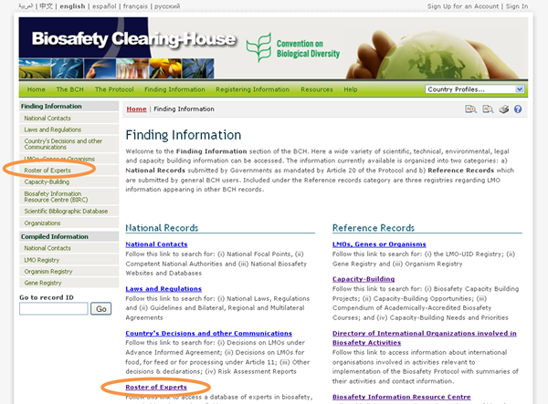
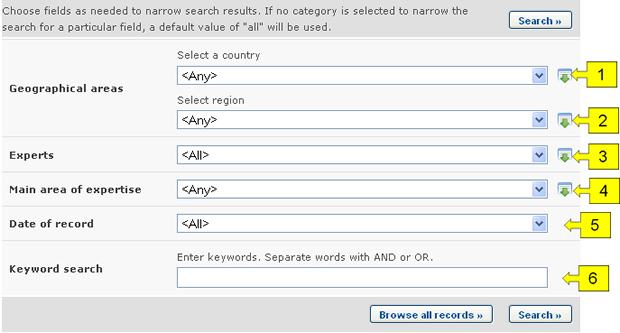
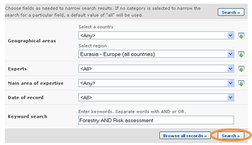
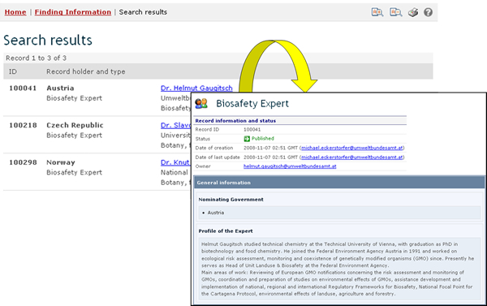

URL: http://bch.cbd.int/database/experts/
The Roster of Experts was established by the Conference of the Parties to the Convention on Biological Diversity (COP) when the Protocol was adopted (see Decision EM-I/3 and Decision BS-IV/4). Its purpose is "to provide advice and other support, as appropriate and upon request, to developing country Parties, in particular the least developed and small island developing States among them, and Parties with economies in transition, to conduct risk assessment, make informed decisions, develop national human resources and promote institutional strengthening, associated with the transboundary movement of LMOs".
The COP-MOP, the governing body of the Protocol, decided that access to the roster of experts will be maintained through the BCH, where nomination forms for the roster are available, so that Parties can nominate experts. Reports on the Roster of Experts database and the voluntary fund are accessible under the reporting section of The Protocol pages. This is covered in Roster of Experts Annual Reports.
The search page for the Roster of Experts database can be accessed from the Finding Information drop down menu on the navigation bar, or from the link in the left-hand menu of the Finding Information page or the Roster of Experts link in the text of that page. These links take users to the Search the Roster of Experts page where they can search for biosafety experts nominated by Governments.


On the Search the Roster of Experts page there are several search criteria boxes:
-
Country: Selection list field for selecting a country
-
Region: Selection list field for selecting a region
-
Experts: Additional search criteria field to add more criteria regarding the experts to narrow the search results. By selecting items in this list, the user can make the following new fields appear:
-
Expert name: keyword field to search by expert name
-
Nationality: Selection list to narrow search results to experts of the specified nationality
-
Nominating country: Selection list to narrow search results to experts nominated by the specified country.
-
-
Main area of expertise: Selection list to narrow search results to experts with the specified main area of expertise.
-
Date of record: Date field for narrowing the search results to a time interval
-
Keyword search: Keyword field for narrowing the results by keyword
See “Using the search pages” to learn about types of fields and their operation.
Example: A user wishes to identify experts from Europe who have experience in forestry and risk assessment. The user (i) selects Eurasia – Europe (all countries) in the Region box and (ii) enters forestry AND risk assessment in the Keywords box.
Clicking on the Search button presents the search results. The search results are displayed as a list of records, sorted by country. Detailed information about each expert can be viewed by selecting the expert’s name, which opens the record.


This picture was taken on February 2010 with the only purpose of providing an example on the usage of the BCH.